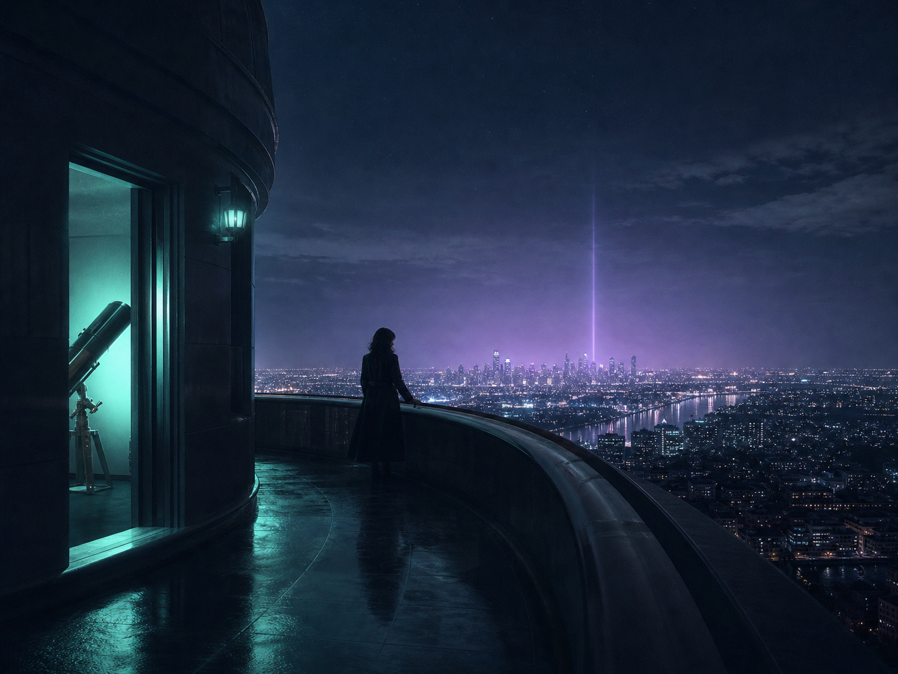
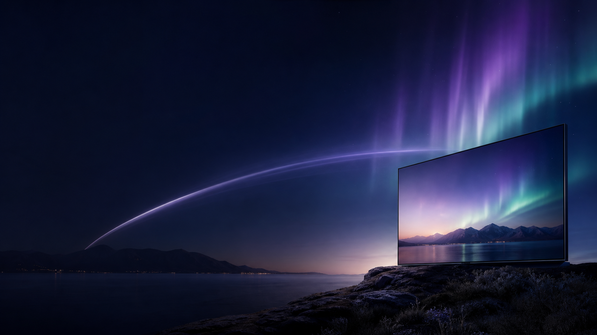
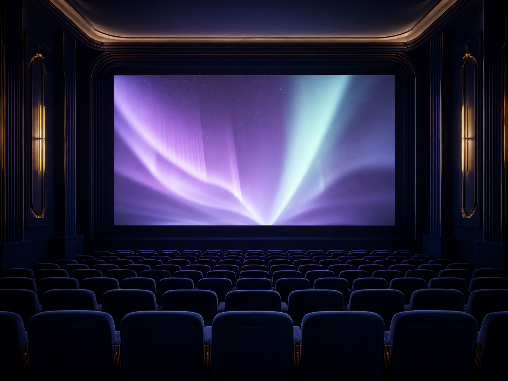

RECOMENDADOLa distancia exacta
Una señal en el cielo, una ciudad despierta y una historia que llega cuando más la necesitás.
Historias, partidos y mundos nuevos, elegidos para tu próxima noche.

Un espacio para mirar más lento.
Deslizá para explorarUna colección que se mueve con vos: cine para apagar el mundo, series para estirar la noche y eventos que pasan ahora.

RECOMENDADOUna señal en el cielo, una ciudad despierta y una historia que llega cuando más la necesitás.

La señal no espera. Entrá a la conversación cuando todavía está sucediendo.
Noticias · 24 horas
+ 38.2k mirandoDeportes · Fecha 14
+ 21.8k mirandoMúsica · Sesión acústica
+ 9.4k mirandoInfantiles · 4+ años
+ 6.1k mirandoAurora ordena el ruido para que encontrar algo bueno vuelva a sentirse simple.
Recomendaciones con criterio, no una pared infinita de miniaturas.
Empezá en un dispositivo y seguí donde quieras, sin perder el hilo.
Perfiles para cada persona, una misma cuenta y noches que se encuentran.
La señal llega lista. Solo elegí dónde querés verla.
Mandanos un mensaje y te contamos cuál plan va mejor con tu casa.
Recibís tu acceso y lo abrís en el dispositivo que ya usás.
Elegí una historia, un partido o simplemente apretá play.
Todo lo que querés mirar, con el plan que mejor se siente en tu casa.
$3.990 / mes
Una señal para tu rutina.
$6.490 / mes
La noche completa, compartida.
$9.490 / mes
Una casa llena de historias.
Precios ilustrativos. Consultá disponibilidad y activación por WhatsApp.
Si todavía te queda una duda, estamos del otro lado de la señal.
Hablar con AuroraAcceso al catálogo completo de películas, series, deportes, canales en vivo y contenido para compartir en familia.
En Smart TV, celular, tablet, computadora y dispositivos de transmisión compatibles.
Sí. Escribinos por WhatsApp y gestionamos la baja de forma simple, sin vueltas.
Elegí un plan y mandanos un mensaje. Te guiamos con la activación en minutos.
Probá Aurora y mirá qué aparece cuando dejás de buscar.
Probar ahora por WhatsApp ↗